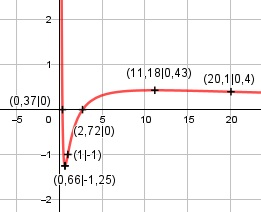

Aufgabe 160 (ln x)2 - 1 f(x) = ------------- = [(ln x)2 - 1]*x-1 x ≠ 0 x Produktregel erste Ableitung: u = (ln x)2 - 1 Kettenregel: 2 * ln x u' = ---------- x v = x-1, v' = -x-2 2 * ln x f'(x) = ---------- * x-1 + (-x-2) * ((ln x)2 - 1) x f'(x) = 2 * ln x * x-2 - x-2 * ((ln x)2 - 1) f'(x) = x-2 * (2 * ln (x) - (ln x)2 + 1) 2 * ln (x) - (ln x)2 + 1 f'(x) = -------------------------- x2 Produktregel zweite Ableitung: u = x-2, u' = -2 * x-3 v = 2 * ln (x) - (ln x)2 + 1 Summen- und Kettenregel: 2 2 * ln x 2 - 2 * ln x v' = --- - ---------- = -------------- x x x f''(x) = -2 * x-3 * (2 * ln x - (ln x)2 + 1) + 2 - 2 * ln x + ------------- * x-2 x f''(x) = -2 * x-3 * (2 * ln (x) - (ln x)2 + 1) + + (2 - 2 * ln x) * x-3 f''(x) = x-3 * (-4 * ln (x) + 2 * (ln x)2 - - 2 + 2 - 2 * ln x) f''(x) = x-3 * (2 * (ln x)2 - 6 * ln x) 2 * (ln x)2 - 6 * ln x f''(x) = ------------------------ x3 Zur Beurteilung, ob f'''(x) ≠ 0: (Begründung siehe Aufgabe 105) u = 2 * (ln x)2 - 6 * ln x Summen- und Kettenregel: 2 * 2 * ln x 6 4 * ln (x) - 6 u' = --------------- - --- = ---------------- x x x 4 * ln (x) - 6 ---------------- u' x f'''(x) = --- = ---------------- v x3 4 * ln (x) - 6 f'''(x) = ---------------- ≠ 0 für x > 0 x4 Definitionsbereich: 0 < x < ∞ Waagerechte Asymptote: Für x --> ∞ geht f(x) gegen 0 Polstelle: Für x --> 0 geht f(x) gegen ∞ Wertebereich: f(x) ist dann am kleinsten, wenn x = 0,66 (Extrempunkt) und f(0,66) = -1,25 --> -1,25 ≤ f(x) < ∞ Symmetrie zur y-Achse bzw. zum Punkt (0|0): (ln -x)2 - 1 f(-x) = ------------- ≠ f(x) -x --> keine Achsensymmetrie (ln -x)2 - 1 -f(-x) = -------------- ≠ f(x) x --> keine Punktsymmetrie Nullstellen: f(x) = 0 (ln x)2 - 1 ------------- = 0 | *x x (ln x)2 - 1 = 0 |+1 (ln x)2 = 1 |ⱱ ln x = ± 1 x = e±1 x1 = e1 = 2,72 x2 = e-1 = 0,37 N1(2,72|0), N2(0,37|0) Schnittpunkt mit der y-Achse: x = 0 x = 0 liegt nicht im Definitionsbereich --> kein Schnittpunkt Extrempunkte: f'(x) = 0 2 * ln (x) - (ln x)2 + 1 -------------------------- = 0 |*x2 x2 2 * ln (x) - (ln x)2 + 1 = 0 |*(-1) (lnx)2 - 2 * lnx - 1 = 0 p, q – Formel p = -2, q = -1 x1,2 = x1,2 = 1 ± x1,2 = 1 ± ln x1,2 = 1 ± 1,414 ln x1 = 2,414 x1 = e2,414 = 11,18 (ln 11,18)2 - 1 f(11,18) = ----------------- = 0,43 11,18 ln x2 = -0,414 x2 = e-0,414 = 0,66 (ln 0,66)2 - 1 f(0,66) = ---------------- = -1,25 0,66 2 * (ln 11,18)2 - 6 * ln 11,18 f''(11,18) = -------------------------------- < 0 11,183 --> Hochpunkt (11,18|0,43) 2 * (ln 0,66)2 - 6 * ln 0,66 f''(0,66) = ------------------------------- > 0 0,663 --> Tiefpunkt (0,66|-1,25) Wendepunkte: f''(x) = 0 2 * (ln x)2 - 6 * ln x ----------------------- = 0 |* x3 x3 2 * (ln x)2 - 6 * ln x = 0 2 * ln x * (ln x - 3) = 0 2 * ln x = 0 |:2 ln x = 0 x1 = e0 = 1 (ln 1)2 - 1 f(-x) = ------------- = -1 WP1(1|-1) 1 ln x - 3 = 0 |+3 ln x = 3 x2 = e3 = 20,1 (ln 20,1)2 - 1 f(20,1) = ---------------- = 0,4 20,1 WP2(20,1|0,4) Graph:
